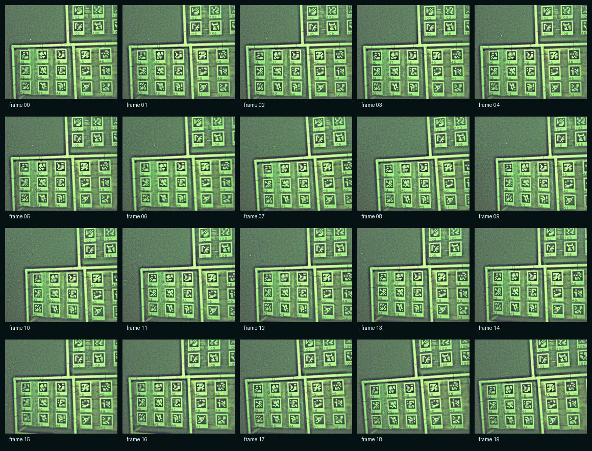

Trajectory Inspector
The plot is drawn from the published pack metadata. Select a frame to inspect its matched pose and timestamp delta without downloading the 12MB zip first.
frame 00
pose loading
Frame Contact Sheet
These are lightweight previews generated from the same 20 PNG frames in the Release artifact.

Rebuild Command
ros2 run aqua_localization export_3dgs_pack_pipeline.py \ --bag datasets/public/tank_dataset/short_test_ros2_with_cameras \ --dataset "Tank Dataset" \ --sequence short_test \ --out /tmp/tank_short_test_3dgs_pack_20frames \ --force \ --max-frames 20 \ --stride 5 \ --max-time-diff 0.05 \ --base-from-camera -0.25 -0.45 0.0 0.0 0.0 0.0 1.0 \ --camera-intrinsics 612 512 655.0 655.0 306.0 256.0 \ --trajectory-topic /apriltag_slam/GT \ --format nerfstudio